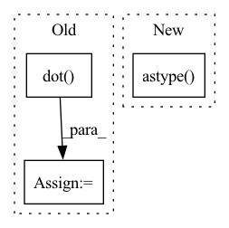

Pattern ID :27063
Before Change
lms[lms == 0] = np.spacing(1)
// get LAB from LMS and reshape to 3-channel image
lab = np.dot( _lms2lab, np.log(lms))
lab = np.reshape(lab.T, (m, n, c))
return lab[..., 0] * 255/100, lab[..., 1] + 128, lab[..., 2] + 128
After Change
def rgb2labY(rgb):
rgb = rgb.astype( "float32") / 255
x = skimage.color.rgb2lab(rgb)
// OpenCV formatIn pattern: SUPERPATTERN
Frequency: 3
Non-data size: 3
Instances Fragment ID: 80596189
Project Name: eidoslab/torchstain
Commit Name: 657d136e21dc3b0fe034b79e3babd4bd19c6390a
Time: 2022-11-23
Author: andrped94@gmail.com
File Name: torchstain/numpy/utils/rgb2lab.py
M Class Name: AnonimousClass
N Class Name: AnonimousClass
M Method Name: rgb2labY(1)
N Method Name: rgb2labY(1)
M Parent Class:
N Parent Class:
M File Name: torchstain/numpy/utils/rgb2lab.py
N File Name: torchstain/numpy/utils/rgb2lab.py
M Start Line: 34
M End Line: 45
N Start Line: 31
N End Line: 38
Before Change
// get LMS from RGB
rgb = np.reshape(I, (m * n, 3))
lms = np.dot( _rgb2lms, rgb.T)
lms[lms == 0] = np.spacing(1)
// get LAB from LMS and reshape to three channel image
lab = np.dot(_lms2lab, np.log(lms))After Change
def rgb2lab(rgb):
return cv.cvtColor(rgb.astype( "uint8") , cv.COLOR_RGB2LAB)
def rgb2labX(rgb): Fragment ID: 80596184
Project Name: eidoslab/torchstain
Commit Name: ba229051afe139adec3583fa4d174ef4ee53cf45
Time: 2022-11-23
Author: andrped94@gmail.com
File Name: torchstain/numpy/utils/rgb2lab.py
M Class Name: AnonimousClass
N Class Name: AnonimousClass
M Method Name: rgb2lab(1)
N Method Name: rgb2lab(1)
M Parent Class:
N Parent Class:
M File Name: torchstain/numpy/utils/rgb2lab.py
N File Name: torchstain/numpy/utils/rgb2lab.py
M Start Line: 23
M End Line: 32
N Start Line: 22
N End Line: 22
Before Change
images = obs[3]
rgb_weights = [0.2989, 0.5870, 0.1140]
grayscale_images = np.dot( images[..., :3], rgb_weights)
obs = (obs[0], obs[1], obs[2], grayscale_images, *obs[4:]) // >= 1 action
return obs
After Change
Preprocessor for TM2020 with images, converting images back to uint8
grayscale_images = obs[3]
grayscale_images = grayscale_images.astype( np.float32) / 256.0
obs = (obs[0], obs[1], obs[2], grayscale_images, *obs[4:]) // >= 1 action
return obs
Fragment ID: 80596187
Project Name: trackmania-rl/tmrl
Commit Name: 01fd87f329a7bab70a6f26025cd9c3b44afb76ff
Time: 2022-06-25
Author: yann.bouteiller@polymtl.ca
File Name: tmrl/custom/custom_preprocessors.py
M Class Name: AnonimousClass
N Class Name: AnonimousClass
M Method Name: obs_preprocessor_tm_act_in_obs(1)
N Method Name: obs_preprocessor_tm_act_in_obs(1)
M Parent Class:
N Parent Class:
M File Name: tmrl/custom/custom_preprocessors.py
N File Name: tmrl/custom/custom_preprocessors.py
M Start Line: 11
M End Line: 13
N Start Line: 14
N End Line: 15